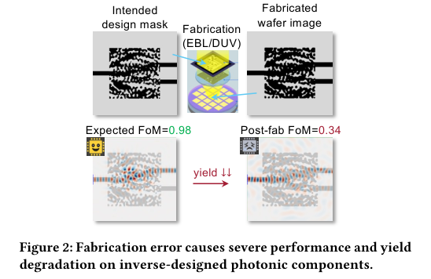
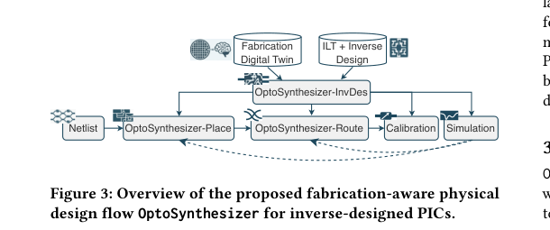
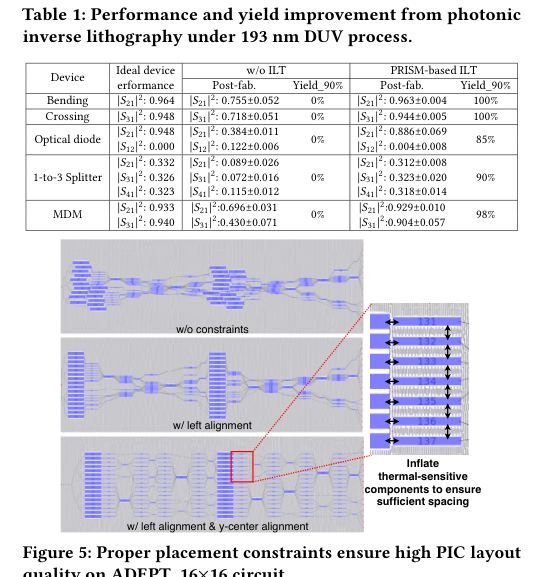
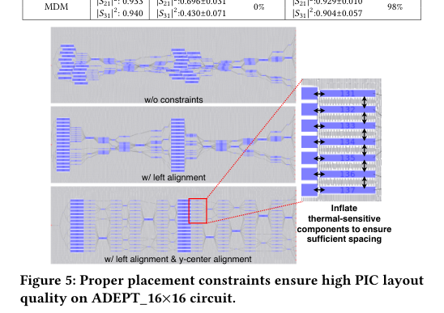
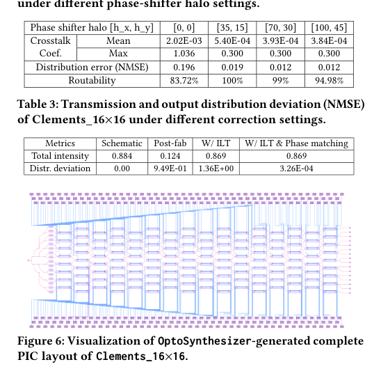

本报告由大模型自动生成，可能存在理解、归纳或数据转述错误；请以原论文为准。 End-to-End Physical Design Automation Flow for Yield-Optimized Inverse-Designed Large-Scale Electronic-Photonic Integrated CircuitsHongjian Zhou, Haoyu Yang, Haoxing Ren, J. Matres, Jiaqi Gu · ACM/IEEE Design Automation Conference (DAC) · 2026 · 原文 · PDF 报告模型：gemini-3.1-pro-preview / high 本文提出了一种名为 OptoSynthesizer 的端到端物理设计自动化（EPDA，原文未说明全称）流程，专门用于优化大规模、逆向设计的光电集成电路（EPICs, Electronic-Photonic Integrated Circuits）的制造良率。 为了帮助理解本文，背景补充：光电集成电路（EPIC）是将传统的电子控制电路与光子器件（利用光作为载体传输和处理信息的器件）集成在同一个芯片系统中的技术。它分为多个抽象层级：最底层是器件层（如波导、分束器、相移器），中间是电路层（由连线的器件组成特定功能的网络），最上层是系统架构。物理设计（Physical Design）是指将电路逻辑图（Schematic）转换为制造工厂可以使用的具体几何图形布局（Layout，通常格式为 GDS，原文未说明全称）。在制造阶段，由于光刻（Lithography）和蚀刻（Etching）等工艺的不完美，晶圆（Wafer）上实际造出的形状会与设计掩模（Mask）产生偏差，这种偏差被称为工艺变异（Fabrication Variation）。如果变异导致芯片性能不达标，该芯片就会被废弃，合格芯片占总产量的比例即为良率（Yield）。 1. 引言与背景问题探讨 (Introduction & Background)随着人工智能工作负载、数据密集型计算和高带宽通信的快速增长，传统的电互连和计算单元已经难以满足系统扩展的需求。光电集成电路（EPICs）结合了电子电路的成熟控制能力以及光子技术的高带宽、低延迟和大规模并行性，成为了一种极具前景的硬件平台。 为了在有限的芯片面积内容纳更多的光子器件，目前学术界和工业界广泛采用**逆向设计（Inverse Design）**方法来生成超紧凑的光子器件。传统的光子器件设计依赖专家经验，在一个预定义的拓扑结构内调整少量参数（例如直线的长度或圆弧的半径）。而逆向设计则将器件合成转化为一个数学优化问题：首先设定一个目标品质因数（FoM, figure of merit，例如特定的透射率或光谱响应），然后利用电磁仿真和伴随方法（adjoint-based methods）在极高维度的设计空间中迭代更新器件的几何形状。这种方法能够突破直觉限制，生成体积缩小几个数量级且性能极高的器件结构。 然而，本文指出，尽管逆向设计在仿真中表现优异，但在实际部署时却面临严峻挑战，核心症结在于缺乏一个统一的、具有制造感知（fabrication-aware）的物理设计自动化技术栈。当前的集成光子电路设计流程是高度碎片化的，器件合成、布局生成、布线和布局后验证往往各自为战，且很少在早期设计阶段考虑可制造性（DFM, design-for-manufacturing）和良率优化。 具体到器件层面（如原文图 2 所示），逆向设计生成的器件通常具有极其不规则的亚波长（尺寸小于光波长）几何形状。这些复杂的形状对光刻畸变、蚀刻偏差等工艺变异极其敏感。在器件的敏感区域，即使是微小的像素级形状偏差，也会导致制造后的实际品质因数（Post-fab FoM）发生断崖式下跌（例如原文图 2 中 FoM 从预期的 0.98 跌落至 0.34），从而导致良率极低。  在电路层面的布局设计上，光子电路的布线与传统的电线布线有本质区别。光波导（传输光的通道）是方向敏感的，且必须以曲线形式（curvilinear）布线，需要满足极大的最小弯曲半径（bend radii）以防止光信号泄漏；同时，波导交叉会带来不可忽视的光损耗（insertion loss）。这意味着在光子电路中，器件的放置（placement）和波导的布线（routing）是强耦合的，器件位置直接决定了互连拓扑、路径长度、光损耗以及相位误差。传统流程中，设计师往往需要手动在原理图和布局之间反复迭代，这对于包含密集互连的大规模光电集成电路来说，既耗时又难以扩展。 针对上述痛点，作者提出，一个有效的 EDA（电子设计自动化）流程不能仅仅把制造变异、热串扰（邻近热源对光学特性的影响）和光电相互作用当作“设计完成后的修补工作”，而必须从器件生成的第一步起，就将它们作为核心优化目标。 2. 核心方法：OptoSynthesizer 框架 (Proposed Framework)为了解决上述问题，作者构建了 OptoSynthesizer，这是一个全栈、端到端的物理设计框架，旨在将可制造性和电路性能作为一等公民（first-class design objectives）。该框架主要由三个核心模块和一个评估闭环组成，数据流向依次为：器件生成 布局规划 详细布线 提取验证与协同优化（如原文图 3 所示）。  2.1 器件层级：OptoSynthesizer-InvDes该模块的任务是提供一个良率优化的、逆向设计的光子 PDK（原文未说明全称）。它集成了两项关键能力： 首先是对制造鲁棒的逆向设计（Fabrication-Robust Inverse Design）。作者使用了其之前开发的 MAPS 基础设施。在这个环节中，优化目标不再仅仅是理想形状下的电磁性能。作者将具有变化采样的可微制造模型直接整合到了端到端的逆向设计循环中。这意味着优化算法在一个受制造能力约束的子空间内寻找解，同时协同优化器件性能和对工艺偏差的抵抗力。在跨层接口上，生成的器件布局及其端口信息和 S 参数模型（S-parameter，原文未定义具体含义）会被打包为兼容 GDSFactory（一种开源布局工具库）格式的 PDK 单元，传递给下游的 EDA 流程。 其次是光子感知的逆向光刻技术（PA-ILT, photonics-aware inverse lithography）。背景补充： 逆向光刻技术（ILT）试图让晶圆上的最终图形尽可能还原设计图形（即几何恢复）。 但本文作者指出，对于光子器件，单纯的几何恢复是不够的，因为在关键光学敏感区域的微小形变会导致巨大的光学功能退化。因此，作者引入了基于 PRISM 框架的 PA-ILT 技术。它训练了一个“物理增强的 AI 数字孪生（digital twin）”来模拟从掩模到晶圆的图形转移过程。这里的核心逻辑是：利用器件的光学敏感度（device sensitivity）来指导掩模的逆向优化，确保修正后的掩模在经历了 193 nm DUV（原文未说明全称）光刻后，能够在其制造出来的实际形状上忠实再现“预期的光学行为”，而不仅仅是视觉上的几何相似。这个数字孪生模型同时也作为一个快速的虚拟晶圆厂，为后续的电路级评估提供数据。 2.2 布局层级：OptoSynthesizer-Place解决的是光子器件放置问题，作者使用了名为 Apollo 的工具引擎。前文提到，光子布线资源极其受限，放置决定了布线的成败。 Apollo 引入了一个名为 cosWA 的光子专用线长模型（wirelength model）。在架构与 EDA 的跨层接口上，cosWA 明确将**端口方向（port orientation）和弯曲带来的布线开销（bend-induced routing overhead）**纳入了代价模型。这意味着如果两个对接端口方向相反，算法会预先计算出光波导为了掉头所需的巨大转弯空间。 同时，引擎通过一种称为“单元膨胀（cell inflation，即在器件周围强行划定额外的空白区域，后文实验中称为 halo）”的方法，支持设计师设定的对齐、规律性和间距约束。这有效地为后续极其占地的波导交叉保留了必要的留白（whitespace），生成了具有极高可布线性（routability）的初始位置。 2.3 布线层级：OptoSynthesizer-Route针对包含数千个网络（nets，即需要连接的节点集合）的电路，作者采用了 LiDAR 系列工具完成布线。 这里的约束条件极其严苛：光波导通常被限制在单一的硅层上（必须平面布线或插入带损耗的交叉元件），而电气布线也只有少数几层金属。LiDAR 采用了一种层次化的、感知曲线的 寻路框架。它能够根据不同的波导弯曲半径和间距要求，自动规划布线资源以插入波导交叉并留出端口逃逸路线，生成几乎无 DRV（原文未说明全称）的真实 GDS 布局。对于金属层的电布线，它采用“逃逸布线（将引脚和焊盘引出阻塞区） 轨道分配 详细布线”的多阶段全局规划策略，实现了针对毫米级引脚到 I/O（原文未说明全称）连接的极高布线速度。 2.4 评估闭环：布局后/制造后评估与协同优化 (DSTCO)这一步是连接物理设计与系统架构的关键。传统流程往往将布局引起的相位误差单纯视为需要通过更严格几何匹配来解决的问题。而本文提出，主动校准（active calibration，通过给相移器加热来改变局部折射率，从而调节光相位）是光电电路部署时必须具备的自由度。 在跨层接口上，OptoSynthesizer 将最终的物理布局转换回可评估的电路抽象（post-layout netlist）。它将连绵的波导拆解为标准的构建块（弯曲、直通波导、交叉），并利用数字孪生预测的“制造后（可选带有 ILT 修正效果的）S 参数模型”对其进行标注。 接着，进入布局后相位校准步骤（post-layout phase-calibration）。系统会在网表中注入热串扰模型，模拟真实的片上热环境，然后对主动相移器进行调谐。最后，将带有制造变异、热串扰和校准状态的网络导出为兼容 GDSFactory 的表示，并送入 SAX（原文未说明全称）等开源插件中评估整体电路行为。这一闭环允许设计师在早期探索“布局密度、工艺鲁棒性和校准功耗开销”之间的跨层权衡（即设备-技术-系统协同优化，DSTCO, device-technology-system co-optimization）。 3. 实验评估与案例分析 (Evaluation)作者通过三个递进的实验案例验证了该框架的有效性。在接下来的图表数据中，涉及的核心数学符号是 、、 和 等。原文未说明这些符号中字母 的具体含义，未说明下标（如 、 等）的具体指代，也未说明其物理单位。 3.1 案例一：构建鲁棒的逆向设计光子 PDK作者测试了在 193 nm DUV 工艺下，ILT 技术对几种逆向设计器件（弯曲波导、交叉、光二极管、1 分 3 分束器等）性能的恢复能力（见原文表 1）。 
3.2 案例二：热感知的布局可行性探索此案例测试了布局引擎 Apollo 对热串扰（thermal crosstalk）的控制能力（参考原文图 5 及其约束）。热相移器非常敏感，靠得太近会导致彼此的热量干扰。 
3.3 案例三：布局后光子电路性能优化该案例在一个 Clements_16x16 阵列（一种对工艺偏差和相位失配极其敏感的相干计算电路架构）上，演示了联合校准优化的重要性（原文图 6 展示了完整的 GDS 布局生成结果）。 
4. 总结线索与局限性 (Main Thread & Limitations)全文主线： 这篇文章的起点是光电混合计算架构（EPIC）在扩展时遇到的物理制造瓶颈——逆向设计生成的光学器件尺寸虽小但极度“脆弱”，且现有的 EDA 工具在处理光信号极其敏感的布线和间距约束时无能为力，导致“设计出来却造不出来，或者造出来无法正常工作”。 为解决这一问题，作者并非简单地修补单一工具，而是打通了从底层物理制造到上层电路逻辑的整条链路，构建了 OptoSynthesizer 框架。它通过“物理增强的数字孪生”将晶圆厂的制造变异提前引入到器件设计（InvDes）阶段，用专为光学的特性（曲线、方向性、热串扰）定制的规则驱动自动布局和布线（Apollo/LiDAR），最后建立一个反馈闭环，在软件仿真中模拟实际芯片通电后利用相移器“修补”制造误差的校准过程。最终实现了设计阶段即可预测并保证高良率的目标。 关键假设与局限性：
|